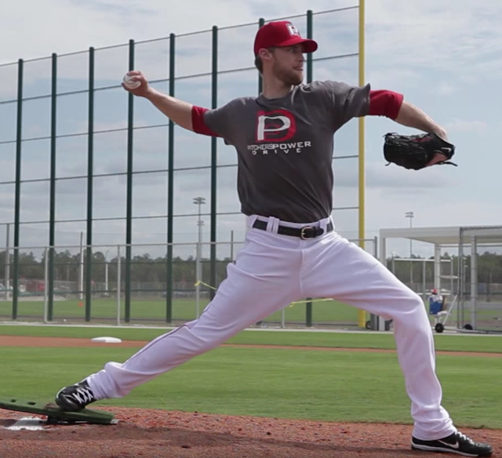

用 Pose Method 中體重/失重的概念來詮釋投球技巧
下面這一段影片非常詳細地說明了投球的技術中「體重」與「失重」所扮演的角色。這一段影片是由蓬勃的執行長 Jeff Hsu 分享在臉書上，相當精彩。影片中在教學的教練是 MLB 德州遊騎兵 1A 球隊投手教練 Steve Mintz，在他這段簡單的教學中，說明了體重、失重跟投球之間的關係。下面將把這段影片中 Steve 教練教學的重點整理出來，再加以 Pose Method 中「運用體重」的概念來做詮釋：
Steve：投球時，後腳(右投的話就是右腳)要像釘子一樣釘在地面上，要非常扎實，不能晃動。
詮釋：這可以用古希臘哲學家亞里斯多德對於移動的精準定義來說明：「當身體的某部分正在移動，另一部分則必定處於『靜止狀態』；而那個移動的部分必先將『支撐』它本身之後才能開始移動。」也就是說，想要移動某部位(以投手來說就是手臂和棒球)，身體的另一部位就必須當作支撐點，而且支撐點愈穩固(地處於靜止狀態)，身體的另一部分將可以移動地更快及更有效率。所以支撐點「不能晃動」是關鍵；以投手來說就是後腳。
Steve：必須先感覺體重移動到後腳，才能做投球的動作。如果後腳感覺不到重量，就不能投出去。每一次訓練都必須在後腳「感覺到扎實的體重」才能開始投球的動作。感覺到才能出手！感覺到才能出手！(很重要所以教練說兩次)
詮釋：Steve 教練一直強調後腳必須「感覺到才能出手！」感覺的主詞是指後腳，那受詞是指什麼呢？就是體重。所以 Steve 教練這一句的完整意思應該是：投手在練習投球的技巧時，關於下半身的重點是「後腳一定要感覺到體重才能出手！」出手就是失重，把後腳儲存的體重，向本壘板丟去。
Steve：你們知道美式足球中的四分衛嗎？他們有一個很重要的技術訓練動作(drill)。這個動作的要點是「傳球前，先後退一步」。這個動作很簡單，就是先退一步，然後才出手。
詮釋：這個四分衛技術動作的目的是為了讓後腳能更確實地感覺到體重。影片中 Steve 請其中一位學員上來示範時，要他「even more」，意思是：把更多的體重放在後腳上。
==
為什麼要先把體重放在後腳上呢？
因為我們能運用的力量主要是從「體重」來的。後腳必須先有體重，才能把它用掉。「運用體重」對投手的意義就是：把體重轉移到球上。從後腳支撐(體重)到前腳支撐的過程中，體重的變化量愈大，球速就愈快。所以，若一開始後腳上可用的體重太少，體重的變化量也會變小。
為什麼體重變化量的大小會跟球速有關呢？

「球」真正從身體後方開始往前「投」是在前腳落地之後，在前腳落地之前，球都要盡量留在後方。當投手的前腳落地後，前腳開始承擔體重，也唯有承擔體重後才能變成支撐點，有了穩固的支撐點才能進而轉動整個身體(臀部+軀幹+手臂+球)，把球送出(上圖正是投手正準備以前腳為支撐點用來轉動身體的瞬間)。
在這個力學的邏輯下，一開始後腳能用掉愈多體重(失重)，就代表前腳能獲得的體重也愈多。當前腳能取用的體重愈大，身體轉動的力道也會愈大。也就是說：假設投手前腳下有個體重計，這個體重計上的體重變化量愈大，球速就會愈快。而前腳的最大體重是從後腳轉移(失重)過來的。
如果我們只是以弓箭步的姿勢來投球，沒有先抬起前腳(把體重先放在後腳再往前轉移)的話，球速必定較慢，因為前腳能夠運用的體重受到限制(也就是假想前腳下面有個體重計，它的變化量會比較小)。反之，先抬起前腳，把體重先後移，再往前轉移時，前腳下那個假想的體重計就會有比較大的變化量。投球，是體重從後腳「轉移」(失重)到前腳，再從前腳「轉移」到球的過程，「失重」的變化量愈大、時間愈短，球速也愈快。